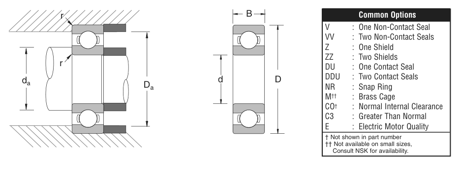

Original catalogue drawing - NSK catalogue, page 19

Scanned from the manufacturer catalogue page listing this part number. All part numbers printed on that table share the same drawing.
Scale cross-section
Blue = inner / outer ring, yellow = rolling element. Drawn to scale from this part's own
dimensions for selection reference only - not a manufacturing or assembly drawing.
Dimension table (mm / inch)
Symbol
Dimension
mm
inch
d
Bore diameter
50
1.9685
D
Outside diameter
110
4.3307
B
Inner-ring / bearing width
27
1.063
r
Chamfer (min)
2.007
0.079
Notes
Weights are given in kg. Load ratings are shown in both the original catalogue units and the converted value (1 N = 0.2248 lbf). Data is provided for selection reference only - confirm against the latest official catalogue before ordering.
Main dimensions
Bore d (mm)
50
Bore d (in)
1.9685
Outside dia. D (mm)
110
Outside dia. D (in)
4.3307
Width B (mm)
27
Width B (in)
1.0630
Load ratings & speeds
Basic dynamic load rating Cr (lbs)
13900
Basic static load rating Cor (lbs)
8610
Limiting speed - grease (rpm)
6,000
Limiting speed - oil (rpm)
7,500
Factor f0
13.2
Weight
Weight (kg)
1.098
Mounting dimensions (fillets / shoulders)
Chamfer r (in)
0.079
Shaft shoulder da min (in)
2.362
Shaft shoulder da max (in)
2.679
Housing shoulder Da max (in)
3.937
Bearing life (ISO 281 basic rating life)
C / P
Equivalent load P (N)
L10 (106 rev)
L10h at 2,000 rpm
4
15,458
64
533
6
10,305
216
1,800
8
7,729
512
4,267
10
6,183
1,000
8,333
15
4,122
3,375
28,125
Basic rating life per ISO 281: L10 = (C/P)3 with C = 61,830 N. Hours = L10 x 106 / (60n). Life-modification factors for lubrication, contamination and temperature (aISO) are not included.
Source & traceability
Brand
NSK
Source catalogue
NSK inch product catalogue
Catalogue page
p.21 (dimensions) / p.22 (ratings)
Dimensions in inches and millimetres, load ratings in lbs.
Send us the quantity you need and we will come back with price and
lead time, normally within 24 hours. Equivalent parts from other brands can be quoted at the same time.